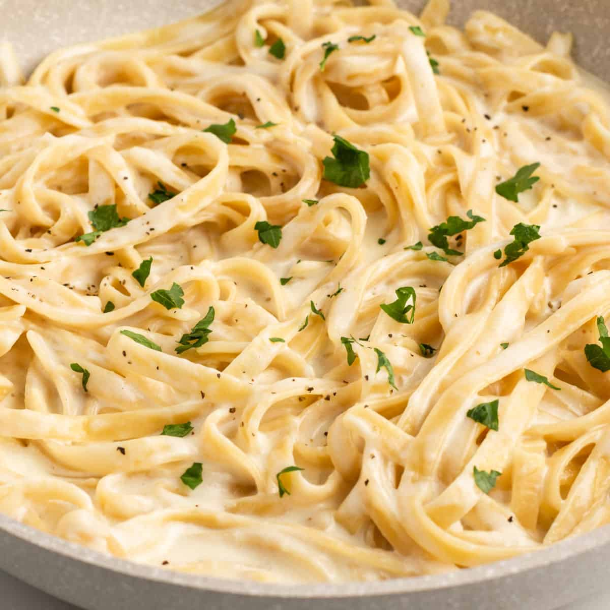

Alfredo Pasta

Description
Tortellini in rich cream sauce. Delicious!
Serve sprinkled with parsley and cheese.
Ingredients
- 1 (16 ounce) package refrigerated cheese tortellini
- 3 tablespoons butter
- 1 pinch garlic powder, or to taste
- 2 cups heavy whipping cream
- ⅓ cup grated Parmesan cheese
- 3 tablespoons chopped fresh parsley
- 1 teaspoon salt
Steps
- Bring a large pot of lightly salted water to a boil. Add tortellini.
Cook, stirring occasionally, until tortellini float to the top and the
filling is hot, about 5 minutes. Drain.
- Melt butter in another skillet over medium heat; cook and stir mushrooms
and garlic powder until mushrooms begin to soften, about 3 minutes.
Stir heavy cream into mushrooms and bring to a boil.
Reduce heat to medium-low and simmer until slightly thickened,
about 3 minutes. Add Parmesan cheese, parsley, and salt.
Continue to cook until cheese is melted, about 1 minute.
- Stir tortellini and chicken into mushroom-cream sauce.
Simmer until heated through, about 2 minutes.